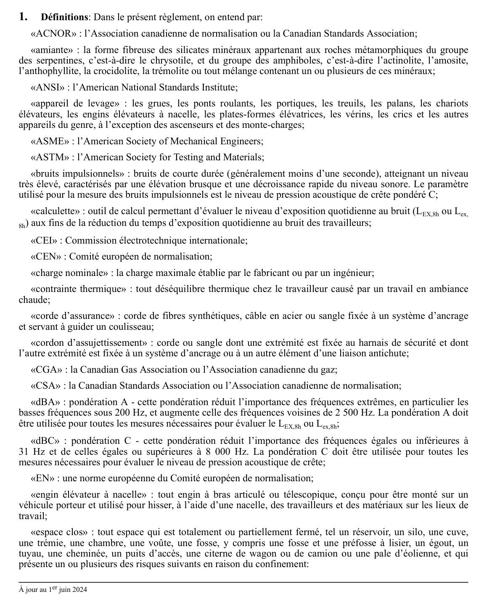

art-1-RSST : définitions du règlement
Un article du wiki ⚖️ Recueil législatif
En bref
Article liminaire purement interprétatif : il n'impose aucune obligation, il fixe le sens des termes utilisés dans tout le reste du RSST. La liste est alphabétique et la capture n'en montre que la première page, de «ACNOR» à «espace clos».
- Sigles d'organismes de normalisation, cités partout dans le règlement comme sources de normes techniques : ACNOR, ANSI, ASME, ASTM, CEI, CEN, CGA, CSA et EN.
- Bruit : les bruits impulsionnels sont de courte durée, généralement moins d'une seconde, et se mesurent en pression acoustique de crête pondérée C ; la pondération A (dBA) atténue les fréquences sous 200 Hz et rehausse celles autour de 2 500 Hz et sert à évaluer le LEX,8h ; la pondération C (dBC) atténue à 31 Hz et moins ainsi qu'à 8 000 Hz et plus et sert au niveau de crête ; la calculette est l'outil d'évaluation de l'exposition quotidienne.
- Levage et travail en hauteur : appareil de levage (grues, ponts roulants, portiques, treuils, palans, chariots élévateurs, plates-formes élévatrices, vérins et crics, à l'exclusion des ascenseurs et monte-charges), charge nominale fixée par le fabricant ou un ingénieur, corde d'assurance, cordon d'assujettissement et engin élévateur à nacelle.
- Contaminants et ambiance : l'amiante couvre six variétés fibreuses, soit le chrysotile du groupe des serpentines et l'actinolite, l'amosite, l'anthophyllite, la crocidolite et la trémolite du groupe des amphiboles ; la contrainte thermique est tout déséquilibre thermique causé par un travail en ambiance chaude.
- Espace clos : tout espace totalement ou partiellement fermé, par exemple réservoir, silo, cuve, trémie, chambre, voûte, fosse ou préfosse à lisier, égout, tuyau, cheminée, puits d'accès, citerne de wagon ou de camion, pale d'éolienne, qui présente en outre un ou plusieurs des risques liés au confinement énumérés à la suite.
🌐 LegisQuébec · 📄 PDF officiel
Texte officiel : capture du PDF
{kind=link}

Toucher l'image pour l'agrandir🔗 Voir art. 1 RSST dans le PDF (page 5) · texte à jour au 1er juin 2024
📚 Source légale : D. 885-2001, a. 1; D. 510-2008, a. 1; D. 1411-2018, a. 1; D. 49-2022, a. 1; D. 1223-2021, a. 1; D. 644-2022, a. 1; D. 821-2023, a. 1; D. 781-2021, a. 1; D. 43-2023, a. 1; D. 1112-2023, a. 1. · LégisQuébec
Voir aussi
- art. 2 : champ d'application
- ⚖️ Loi habilitante : LSST
- ↑ Index du bloc : Interprétation et champ d'application
Pages qui pointent ici (5)
- art-1-RSST Sécurité industrielle
- art-2-RSST : champ d'application Recueil législatif
- art-312.6-RSST : mode de plongée selon certains travaux Recueil législatif
- RSST Recueil législatif
- RSST : Section 1 : Interprétation et champ d'application Recueil législatif